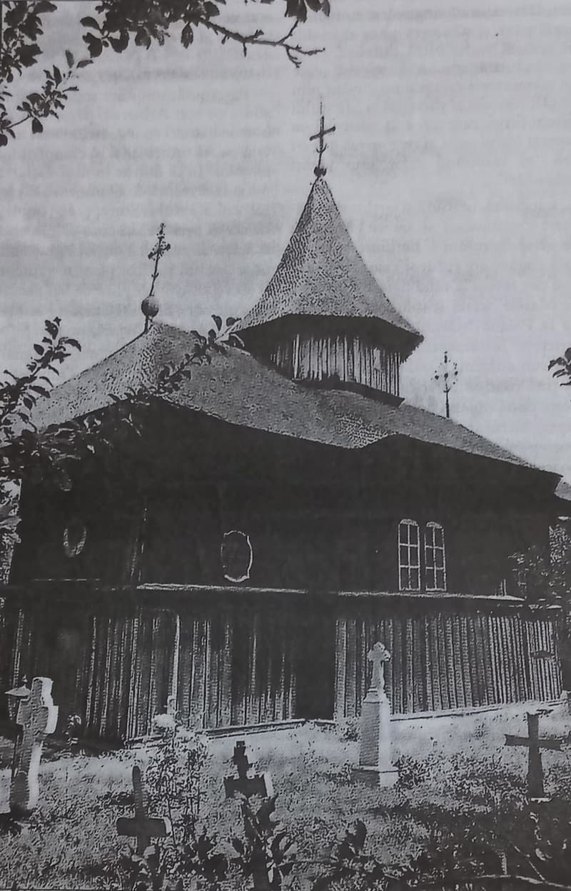
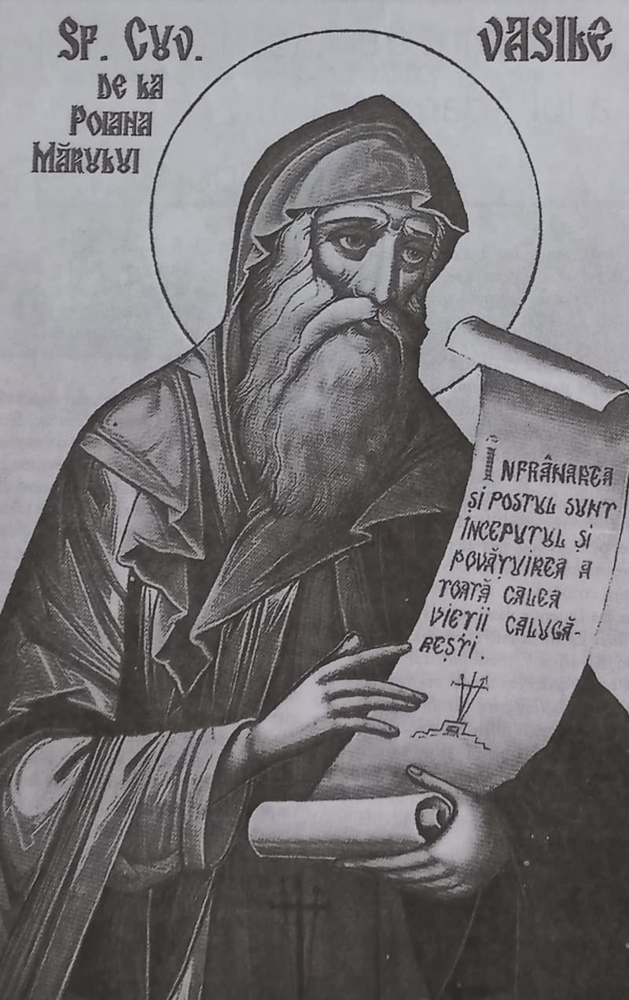

În anul mântuirii 2003, luna martie, ziua a cincea, la București, era dat un Tomos Sinodal de canonizare a Sfântului Cuvios Vasile de la Mânăstirea Poiana Mărului, semnat de toți membrii Sfântului Sinod al Bisericii Ortodoxe Române, printre care și actualul întâistătător (adică tocmai cel ce-a iscălit al doilea documentul, pe atunci ca arhiepiscop al Iașilor și mitropolit al Moldovei, făgăduind oficial, solemn și repetat că va urma, respecta și adânci linia duhovnicească a vrednicului de pomenire Patriarh Teoctist, evident în duh și adevăr, prin păstrarea cu sfințenie a rânduielilor bisericești și monahale în toate așezămintele Patriarhiei, autodeclarându-se cu firavă și ambiguă modestie un „tradiționalist dinamic” și un „manager de succes”, desigur convins):
„Sfânta Biserică a lui Hristos cinstește după cuviință pe cei ce și-au petrecut viața de aici întru sfințenie și evlavie și care, prin faptă, prin cuvânt sau prin scrieri, au adus mult folos duhovnicesc în sufletele celor credincioși. Tot astfel a trăit și s-a nevoit Cuviosul Stareț Vasile ieroschimonahul, povățuitorul obștii călugărești din Mânăstirea Poiana Mărului, aflată în Munții Buzăului. După aspre osteneli, el primit de la Dumnezeu darul sfătuirii și al călăuzirii sufletelor, pe care l-a înmulțit spre folosul cetelor monahicești și al binecredincioșilor creștini.
Fiind un lucrător încercat și nerătăcit al rugăciunii minții în inimă, el a lăsat mai multe scrieri referitoare la aceasta, precum și alte povățuiri pentru monahi, pline de dumnezeiască înțelepciune. Fiind cinstit, deopotrivă, cu marele Stareț Paisie al Mânăstirii Neamțului, fiul său duhovnicesc, Cuviosul Vasile de la Poiana Mărului, trecut la viața veșnică în anul mântuirii 1767, a rămas în amintirea tuturor ca un Sfânt Părinte al monahismului ortodox de pretutindeni și următor — prin fapte și scrieri — al marilor nevoitori pe calea desăvârșirii, făcându-se pildă de iubire a lui Dumnezeu, de înfrânare, de smerenie și de iscusită povățuire duhovnicească.
Drept aceea, noi, membrii Sfântului Sinod al Sfintei noastre Biserici Ortodoxe Autocefale Române, privind la viețuirea plăcută lui Dumnezeu a Cuviosului Stareț Vasile și purtând grijă de folosul comun al credincioșilor și al monahilor drept-măritori, urmând Tradiției Sfinte a Bisericii Ortodoxe și chemând în ajutor harul Preasfintei și de viață făcătoarei și nedespărțitei Treimi, hotărâm:
Ca, de acum înainte și în veci, Starețul Vasile de la Mânăstirea Poiana Mărului să fie numărat între sfinții Bisericii, în ceata Cuvioșilor Părinți purtători de Dumnezeu, și să fie pomenit și cinstit cu cântări de laudă în ziua a douăzeci și cincea a lunii aprilie, ziua fericitei sale adormiri întru Domnul.
Poruncim, de asemenea, în Duhul Sfânt, ca viața, slujba și icoana Sfântului să fie primite cu evlavie de preoții, monahii și credincioșii ortodocși.
Spre deplină statornicire a celor pe care le-am hotărât în chip sinodal și canonic, întărim cu semnăturile noastre acest Tomos Sinodal de canonizare a Cuviosului Vasile de la Mânăstirea Poiana Mărului, aducându-l la cunoștința clerului și a tuturor drept-credincioșilor creștini din cuprinsul Patriarhiei Române”
Vom vedea ceva mai departe că nu este de-ajuns să-i înveți pe alții drept cuvântul Adevărului, ci trebuie obligatoriu să-l și săvârșești drept, împlinind și plinind întocmai, în duh și adevăr, Sfânta Predanie, cuvintele Sfinților, Mucenicilor și Cuvioșilor, pentru că altfel, în mod evident, drept înveți, dar strâmb făptuiești, intrând sub incidența cuvintelor Mântuitorului nostru Iisus Hristos, Care ne previne pe toți să nu-L slăvim doar cu buzele, iar cu inimile să stăm departe de Dânsul…
„Și am scris eu însumi cu a mea mână adevărat”
Până atunci să ne reamintim Testamentul Starețului Vasile („text reprodus cu mici intervenții stilistice după «Uricariul», vol. XIV, 1889, pag. 308-311, unde se reproduce textul editat de Al. Pelimon, «Descrierea sfintelor mănăstiri», București, 1861, pag. 51-61), pe care Cuviosul l-a denumit «Diata pe care am făcut-o eu ucenicilor mei înainte de moartea mea»”:
„Supărându-mă eu mult de multă întrebare a cinstiților și numiților boieri ai Țării Muntenești, care au poftit ca să știe: «Ce este pricina aceasta, că atâta vreme au viețuit muntenii cu rușii, dar acum s-au despărțit la două schituri?», am fost nevoit să arăt tuturor, cu sfatul rușilor și al muntenilor, care anume este această pricină într-acest fel.
Făcând eu acest schit, anume Poiana Mărului, și trăind câtăva vreme cu frații mei, cu rușii, au început a veni frați și români și ruși, și atâția au venit, încât s-au înmulțit frații, mai mulți fiind munteni decât ruși. Deci au început muntenii a tânji între dânșii pentru cântarea și slujba bisericească, zicând că nu înțeleg, citindu-se tot rusește; și-au înțeles aceasta și rușii.
Iar întâmplându-se și mie a cădea în grele boli, au venit la mine rușii li mi-au zis astfel: «Cinstite al nostru părinte duhovnicesc, nouă așa ne zice gândul și ne este și voia: până trăiești sfinția ta mai bine ar fi să așezi în două schituri, ca să-și facă fiecare cântarea sa în sfânta Biserică și rugăciunea și citirea la masă, și în tot locul pe limba sa, precum auzim și pe frații noștri munteni zicând: că și ei poftesc așa. Căci vedem că ai îmbătrânit și ai slăbit, și poate te va chema Dumnezeu; pentru ca și după mutarea sfinției tale să trăim ca frații, precum am trăit și până acum».
Deci auzind eu de la dânșii aceasta și chemând pe toți ucenicii mei, adică pe munteni și pe ruși, și cercând și aflând gândul din amândouă părțile, am socotit să fac după gândul lor, văzând că s-au înmulțit și dinspre o parte și dinspre alta. Și am întrebat pe munteni: «Voiesc și ei să șadă la schitul Poiana Mărului, și eu cu frații mei, cu rușii, să merg la Dălhăuți?», iar ei au zis: «Cinstite părinte, noi nu putem să ținem acest schit pentru două lucruri: întâi că este greu cu hrana vieții, al doilea că sfințiile voastre v-ați ostenit aici întâi, și noi am venit mai pe urmă la gata; ci să ne găsim și noi un loc mai lesne de hrana vieții și să punem și noi osteneală, să facem precum am văzut cât ostenești și sfinția ta, fiind în țară străină».
Și auzind eu aceasta, am trimis doi dintr-înșii ca să meargă să găsească loc cu liniște și depărtat de oameni pentru viața cea sihăstrească. Și au umblat prin multe locuri în Țara Muntenească și nu le-a plăcut; și au venit la mine și mi-au spus că n-au găsit loc să le placă, și m-am gândit unde să găsească acest loc de viețuit cu pace. Deci a venit unul dintr-înșii și mi-a zis așa: «Cinstite părinte, știi că venise un preot de la Moldova, de la Vrancea, de cerea de la sfinția ta să-i dai câțiva frați, că face un schit la loc de sihăstrie. Să cercăm și acolo». Auzind acest cuvânt, i-am trimis și acolo și au văzut, și le-a plăcut cum a fost, de vreme ce și preotul acela i-a primit cu toată bunăvoința. și au venit și mi-au spus toate. Atunci eu, chemând pe ucenici și pe frații mei, partea muntenească, i-am așezat cum să viețuiască viața cea sihăstrească. Și după cum se cade, ca un părinte fiilor săi, adică fiilor mei celor sufletești, parte muntenească, le-am dat zestrea lor, adică am împărțit averea fiilor mei, și rușilor, și muntenilor, după cât am putut. Și am dat fiilor mei, care sunt din partea muntenească, partea lor, cărțile ce trebuie Bisericii și odăjdiile cu orânduiala lor și icoanele cele mari câte patru, și le-am făcut și hrisoave de la domnul Moldovei și le-am dat lor, ca să aibă pace și milă, viețuind în țară străină; și după ce i-am așezat, le-am mai dat bani de le-am făcut chilii ca și altor frați de aici. Și acestea ce le-am dat, le-am dat lor ca unor ucenici ai mei, dar n-am dat altora străini, pentru ca să fie pace între amândouă schiturile și să trăiască ca frații unii cu alții, nesculându-se nicidecum unii asupra altora.
Dar, dacă va îndrăzni cineva a strica după moartea mea această legătură și așezământ al smereniei mele, sau va îndrăzni să facă tulburări și sminteli, unul ca acesta să fie anatemă, și partea sa și locul lui să-i fie în tartar împreună cu Iuda vânzătorul. Și am scris eu însumi cu a mea mână adevărat”.
Nevrednicul Stareț VASILE în schitul Poiană Mărului, 1764 Ghenarie 3
(Părinți ruși: Vasile schimonah, Teodosie ieromonah, Atanasie ieromonah, Teodosie ieroschimonah, Ioanichie monah, Ilarion monah, Samoil monah, Kiril ieroschimonah, Antonie monah, Leontie monah, Teodosie monah, Damian monah;
Părinți români: ieromonahul Neofit, ierodiaconul Daniil, schimnicul Spiridon, monahul Metodie, Dionisie, Erazum (sic!))
Argument
„Din testament transpare profunda smerenie și blândețe a starețului, dispus să-și părăsească schitul întemeiat de el pentru a le permite monahilor de origine română să-și organizeze propria lor comunitate autonomă (Termenul de origine slavă «stareț», echivalent al grecescului «gheron», trebuie înțeles aici în accepțiunea lui originară, etimologic-harismatică, de «bătrân» îmbunătățit duhovnicește și povățuitor al mai multor ucenici iar nu în sensul administrativ, de conducător al unei mânăstiri sau a unui schit, pentru care există termenul corect de origine greacă, «egumen», sens care, dintr-o regretabilă dar elocventă în același timp confuzie a planurilor circulă cuvântul «stareț». De altfel, el a pătruns în limba română odată cu apariția «paisianismului», investit cu prestigiul acestei mișcări. Elocventă, în acest sens, este declarația din 1838 a călugărilor de la Cernica în care aceștia afirmau despre comunitatea lor că este «chinovie de părinți cu stareț, iar nu mânăstire cu egumen»” - (I) Furtună, „Ucenicii starețului Paisie în Mănăstirile Cernica și Căldărușani”, București, 1927, p. 17 — n. ed.).
Am zice că tocmai simplitatea naturală a diatei, ferită de orice înflorituri stilistice, grija vie și părintească pentru toți fii săi duhovnicești, adânca înțelepciune duhovnicească și sfințenia anatemei din final, pecetluită cu putere multă de Sus, fac din cuvinte Sfântului Stareț (care se socotește pe sine nevrednic, cu o smerenie reală ce te izbește prin evidență, comparativ cu falsa smerenie a multor păstori și păstoriți contemporani!) un teribil avertisment pentru toți călcătorii de lege din zilele noastre, dar și pentru noi, păcătoșii, care am îndrăznit să scriem, doar cu binecuvântare, aceste gânduri-lumină de aducere și luare aminte cu grijă la cuvintele Sfinților, care prietenii Mântuitorului se numesc!

Acea precizare, aparent inofensivă și inutilă, „și am scris eu însumi cu a mea mână adevărat” constituie o pildă de nebiruit curaj duhovnicesc izvorâtă pentru noi dintr-o conștiință hristică pilduitoare, dar și o nebiruită armă din lumina veșnic vie și cugetătoare trimisă nouă, unei „generații plăpânde de creștini”, precum cu neostoită durere zicea Părintele Gala Galaction. El se adresa în egală măsură, păstorilor și păstoriților, care se tem să mărturisească Adevărul în orice împrejurare, se tem de uneltirile celui rău fiindcă nu au bărbăția duhovnicească a înaintașilor noștri, dar, vai nouă, nu se tem de Judecata Domnului nostru Iisus Hristos, pe care Îl mărturisesc de multe ori doar cu buzele, neprimind Crucea Sa până la capăt, de frică, din interes sau din slavă deșartă, disimulate iezuit într-un leșios și vag „cosmo-creștinism”, împănat până la saturație cu elemente umaniste idolatre, sub pretextul străveziu al unei cenzuri teologice anti-psihologizante (tot de un psihic uman concepută — Sic!). În acest mod autoritarist, prezumțios, alunecos și asediat de superbie se încearcă excluderea cu orice preț a oricărei seve duhovnicești autentice din viața nevoitorilor creștini, ca și cum primul loc de întâlnire a omului cu Mântuitorul nu ar fi conștiința sa creștinată, ci spațiile galactice reale sau virtuale, ce-i drept zidite și ținute proniator tot de Dumnezeu!
Întru totul inspirat zicea genialul filosof și mărturisitor creștin Petre Țuea, „cu un cuvânt mai de la carte”, ca să-l parafrazăm pe la fel de hăruitul și regretatul Părinte Galeriu (cel devorat „cărturărește” din varii interese, dar nu și asimilat corect, de către toți ocultofilii și neo-gnosticii contemporani, chiar sub ochii noștri): „Adevărul este extramundane - transcendent - neexistând cale umană către el. Deci, nu căutarea, ci revelația îl arată. Este o favoare a lucizilor, care îl primesc, Este translogic — transrațional, rațiunea vehiculându-l și transempiric, concretul oglindindu-l prin actul creator. Înlăturarea transcendenței din actul cunoașterii înseamnă renunțarea la adevăr, iar prelungirea lumii părerilor și a întrebărilor în transcendență, extrapolarea ilegitimă limitativ-nocivă. Omul redus mitologic, filosofic, științific, moral și tehnic, la el însuși, se topește în «jocul aparențelor»” (Maurtras).
O spunem cu durere, o spunem cu mâhnire, o spunem cu regret, cele mai multe „predici” ale actualului Întâistătător sunt minate de simplele sale păreri personale cât se poate de terestre, într-o problemă sau alta, domnia sa nefiind deloc străin de starea de lucruri creată la Poiana Mărului și nici de ignorarea trufașă a diatei unui Sfânt Cuvios, pe care îl recunoaște (nota bene) ca Sfânt, dar nu-l ascultă! Oare de ce? Quid prodest? Probabil fiindcă a uitat sau nu mai dorește să-și amintească că „nu pentru școală, ci pentru viață învățăm… (din lat. „non scholae, sed vitae discimus”).
În vremuri de răscruce, în vremuri de restriște, în vreme de cernere de Sus și cei mai proști fii ai Bisericii dreptslăvitoare au nu doar dreptul, ci și datoria sfântă de a-și exprima limpede, ferm și tranșant opinia (nu „părerea”- Sic!), cu atât mai mult când au primit o hirotesie de la vrednicul de pomenire Patriarh Teoctist, precum și binecuvântarea de a vorbi în Biserică (ca și consilier onorific al Arhiepiscopiei Bucureștilor, hirotesie validată sau nu de Sus, vom vedea cu toții la Judecata nemitarnică).
Poate că a sosit vremea, și acum este, să-i spunem cu franchețe și compasiune creștină actualului Întâistătător, că existau și există în țară ierarhi ortodocși mult mai vrednici și pregătiți decât domnia sa, pe toate planurile: duhovnicesc, teologic, moral, cultural și chivernisitor (nicidecum „managerial” — Sic!). Tot la sorocul vremii, aceste vase arhierești alese de Sus și nicidecum din plan terestru, fie el și „democratic”, vor fi așezate în dreaptă și sfântă slujire acolo unde li se cuvine, adică în văzul tuturor credincioșilor și necredincioșilor de pretutindeni, iar domnia sa va înțelege, în sfârșit, că „te poți împodobi cu penele altora, dar nu poți zbura…”.
Dreptul Judecător să-i fie mult-Milostiv în acel ceas greu pentru domnia sa, în care Cel de Sus îi va arăta în mod implacabil chipul său lăuntric cel adevărat, printr-un înger luminător și curățitor trimis de EI, ce „mătură și mătură și mătură… ne-cru-ță-tor”, ca într-un poem post-modernist al lui Prevert (poet cam antiteu și hulitor, ce-i drept, dar uneori inspirat, căci Dumnezeu trăiește prin cine, unde, când și cum binevoiește…).
Ultimul abuz euro-managerial de la Poiana Mărului ne-a convins definitiv pe noi, talpa și prostimea țării, că lucrurile stau exact așa cum le vedem cu toții și că numai postul luminat și rugăciunea lăuntrică de toată vremea, ne mai pot scăpa de-o asemenea linie euro-managerială ecumenistă, arghirofilă, discreționară, nechibzuită, necanonică și călcătoare de legi, de fapt anti-ortodoxă. Și dacă toate stăpânirile, bune sau rele, sunt toate cu știrea lui Dumnezeu, pentru păcatele noastre, apoi tot cu știrea și puterea lui Dumnezeu sosește și lucrează și îngerul luminător, de data aceasta ca într-o poezie antologică a lui Vasile Voiculescu: „Așa ani de-a rândul / M-am canonit să car lumina cu gândul… / Atunci ai trimis îngerul Tău să-mi arate / Izvorul luminii adevărate: / El a luat în mâini securea durerii / Și-a izbit năprasnic, fără milă, pereții (…) / Îngerul luminător a zburat aiurea, / Lăsându-și înfiptă securea; / Cocioaba sufletului de-atunci însă-i plină / De soare, de slavă și de lumină…”. Mai clar de atât nu se poate de la noi, cei mulți, mici și proști, dar cu sfântă frică de Dumnezeu se poate de la Sfântul Cuvios Vasile, care scrie încă și mai clar, în diată, că va fi extrem de rău „celor care vor strica această legătură după moartea sa” or „vor îndrăzni a produce tulburări și sminteli”…
Iar de se vor căuta explicații pământești, meschine, naive sau pseudo-teologice, scolastice sau ecumeniste, pentru cinstirea reală pe care o arătăm unui mare Stareț al monahismului românesc și pentru franchețea noastră totală în ceea ce privește modul critic, lucid și responsabil în care receptăm actuala linie managerială de „păstorire” dictatorială, disprețuitoare, ambițioasă, necruțătoare și pseudo-duhovnicească, putem asigura întreaga obște creștină, ca la Sfânta Spovedanie, că noi, talpa și prostimea țării, ne-am săturat pur și simplu de toate ifosele ecumeniste și inițiativele nesocotite ale acestui sumbru „tradiționalist dinamic” neavând nici cea mai mică încredere să ne încredințăm sufletele euro-vlădiciei sale, departe ca cerul de pământ de păstorirea real mântuitoare a Sfântului Ierarh Calinic, Sfântului Ierarh și Martir Antim Ivireanul și a multor alți luminați arhierei jertfitori și vrednici din istoria noastră, de-al căror grumaz îndelung încercat poporul putea fără grijă să-și atârne sufletele dornice de mântuire și de-o autentică călăuzire duhovnicească, de care domnia sa nu este încă, în mod evident, capabil.
Dacă domnia sa crede că ne înșelăm, să ne dovedească prin fapte duhovnicești autentice eventuala greșeală, iar de nu ne înșelăm (suntem extrem de mulți cei care vedem lucrurile întocmai așa cum le-am scris!), apoi cu Mila lui Dumnezeu să îndrepte ce-i de îndreptat, să-și ierte ce-i de iertat și să-L roage pe Dumnezeu să-i arate o evidență orbitoare: un păstor fără turmă nu înseamnă nimic, căci numai Păstorul cel Bun își pune cu adevărat sufletul pentru turma Sa și pe Acela oile cuvântătoare Îl urmează. Dar numai pe Acela.
Sfinții lucrează și după moarte
Cu smerită metanie de gând, în fața Sfântului Stareț Vasile și a tuturor ucenicilor săi, pe care îi simțim mai vii ca oricând peste veacuri, care ne sunt martori neclintiți din Biserica biruitoare, mărturisim că-i deplângem adânc, ca pe niște vii morți, pe cei cate vor îndrăzni să încalce sau au încălcat deja, câtuși de puțin, indiferent de subtilitatea motivațiilor manageriale și conjuncturale, Testamentul Sfântului Cuvios Vasile de la Poiana Mărului, cel care i-a învățat pe mulți rugăciunea inimii, el însuși fiind «un lucrător încercat și nerătăcit» al acestei tainice și mântuitoare lucrări, după cum prea bine se precizează în Tomosul Sinodal.
Dintre veștile rele, printre alte multe inițiative arhierești nechibzuite, care au ajuns recent până a noi, talpa și prostimea țării, am primit-o și pe aceea, întru totul mâhnitoare, că se află în plină desfășurare o schimbare radicală, dar și total neînțeleaptă, a rostului Sfintei Mânăstiri de la Poiana Mărului (mutarea monahilor la o altă mănăstire, lăsarea unui singur ieromonah în așezământ și aducerea unor monahii în această veche vatră duhovnicească cu rânduială athonită, „ispravă” care ne reamintește cu tărie un cuvânt plin de tâlc filocalic și paterical al Sfântului Efrem Sirul, care zicea că «diavolul nu suportă lucrul vechi, ci vrea mereu lucruri noi», el inspirând celor imprudenți „schimbări”…).
Cu multă, neștiută și jertfitoare dragoste creștinească și smerită metanie de gând, adresăm o fierbinte și canonică rugăminte tuturor celor care încă mai pot reveni la rânduiala statornicită de Marele Stareț și iscusitul duhovnic de la Poiana Mărului: să respecte cu strictețe Testamentul pentru a nu cădea sub anatema Cuviosului Vasile, și să țină cont că Biserica este ținută de peste două milenii de către creștinii cu fapta, întrucât păstori fără turmă nu pot exista și nici turmă mântuită nu poate fi fără păstori adevărați, drept învățând și săvârșind cuvântul Adevărului, în tot locul, în toată vremea și în toate împrejurările, numai după voia Sa cea dumnezeiască și nu după a noastră cea omenească.
Iar de unii se vor mira „seniorial” și nemulțumi „elitist” de cuvântul acesta simplu, adevărat și hotărât (caprele suntem noi, oile le știe numai Dumnezeu!), apoi să ia aminte sfințiile și preasfințiile lor, că „nici un om neiubit de neamul său nu stă mult într-o dregătorie, nici nu este ascultat și cu atât mai puțin urmat”, fiindcă plăcuți în mod real Dumnezeului Cel veșnic Viu și în Prea Sfânta Treime slăvit și închinat sunt „cei ce păzesc legământul Lui și își aduc aminte de poruncile Lui, ca să le facă pe ele (…), cei puternici la virtute care fac cuvântul Lui și aud glasul cuvintelor Lui” (Psalm 102).
Țărâna s-ar putea teme uneori, Duhul Adevărului niciodată
Temeiurile noastre reale sunt întotdeauna numai cuvintele Mântuitorului și ale Sfinților Săi și nicidecum inovațiile, îndrăznelile și reformismele de toate soiurile, oricât de aparent subtil cosmo-teologice și declamativ irenice ar fi ele, tocmai pentru că în Biserica Ortodoxă conducerea este sinodală, canonică și în comuniune harică, dictatul ecclesial, pseudo-teologic, total neduhovnicesc și vădit necanonic, fie el și la cel mai înalt nivel terestru, fiind demult și cu desăvârșire compromis și contra-productiv, „Dacă nu este bine a tăcea cineva când este nedreptățit, cu atât mai mult va fi pedepsit cel ce trece cu vederea și tace când sunt hulite dumnezeieștile legi și canoane (Sfântul Ioan Gură de Aur).
Rugăm cu umilință sufletească neștiută pe toți Arhiereii, păstorii și duhovnicii noștri cu o conștiință sacerdotală vie, să cerceteze și să cumpănească temeinic în ce duh se încalcă, fățiș, silnic și fără teamă de Dumnezeu, Testamentul Sfântului Stareț și ce-i împinge pe acești nechibzuiți euro-călcători entuziaști să-și primejduiască grav sufletele, trecând sfidător peste testamentele și avertismentele pline de har proorocesc ale unor Sfinți și Cuvioși Părinți ai Bisericii noastre dreptslăvitoare.
Astfel, Sfântul Mucenic Ignatie Teoforul, purtătorul de Dumnezeu, ne învață limpede: „Cel ce grăiește în afara celor poruncite de Dumnezeu, chiar dacă este vrednic de încredere, chiar dacă postește, chiar dacă se nevoiește, chiar dacă minuni face, chiar dacă proorocește, să-ți fie ție ca un lup îmbrăcat în piele de oaie, care strică și nimicește oile”.
Din păcate, pentru noi, talpa și prostimea țării, lucrurile stau și mai grav cu unii dintre cei mai nechibzuiți păstori ai noștri, care pe lângă faptul că grăiesc în afara poruncilor lui Dumnezeu, nici nu sunt vrednici de încredere (fiind demult compromiși pe la Bossey), nici nu postesc, nici nu se nevoiesc, nici minuni nu fac, nici nu proorocesc, ci îmbrăcați în blăniță de mieluți ecumeniști, cer doar cu o insistență hulpavă, necuviincioasă și profund neduhovnicească, sume mari de bani; tot mai mulți bani, pentru tot soiul de inițiative ecumeniste și proiecte euro-reformiste, la limita sau prin preajma ereziei, nerealiste, necruțătoare și mereu mai apăsătoare pentru bieții creștini, oferindu-le în schimb simple euro-floricele oratorice, fără vreo picătură de sevă duhovnicească și fără vreun orizont taboric mântuitor, căci cei care doar ritoriceșc, tratându-i pe ceilalți co-slujitori și închinători ca pe niște simpli executanți (zicându-le disprețuitor colaboratorilor lor că „pătimesc pentru păcatele lor”, ca și când ei n-ar avea păcate - Sic!) nu fac decât ce vor domniile lor, nelucrând nicicând înțelept, cu mult, luminat și adânc sfat duhovnicesc.
De aceea, cei ce nu se sfătuiesc ci nimeni în mod real, ba chiar crezându-se singurii teologi dintre hotarele țării, încearcă să reintroducă o jalnică și ridicolă cenzură post-ateistă, dint-o funestă mândrie, vai, fără margini, vor cădea precum cad frunzele, știut fiind din bătrâni că Dumnezeu îndelung zăbovește, dar și răsplătește! Nu ne facem deloc iluzii, că aceste rânduri izvorâte din durere, milă și firească mâhnire a abuzurile grave, semnalate tot mai des, ale unor păstori neatenți la semnele timpului, le vor aduce trezirea salutară, dar avem nebiruita nădejde că rugăciunile Sfinților îi vor întoarce de pe drumul amăgirilor ecumeniste și reformiste, iar anatema Cuviosului nu îi va ajunge când le va fi lumea mai dragă. Să nu fie la nimeni, să nu fie, împlinirea anatemei, fiindcă, vai, a doua oară, din mâinile Dumnezeului Cel Viu, Dumnezeul părinților noștri, nimeni nu-i mai poate scăpa, oricât de mare le-ar fi vremelnica putere, dregătorie sau sinecură…
Așadar, cum cinstim noi diata Sfântului Cuvios de la Poiana Mărului? În duh și adevăr, precum se cuvine sau ecumenist, discreționar și necugetat precum ne taie capul sau precum ni se euro-dictează? Pe cine ascultăm? Pe Cuviosul Stareț aflat deja în Rai sau pe călcătorii testamentului său sfânt și sfințitor, aflați sub ispita celui rău, ba chiar pe drumul spre iad mondo-pavat cu intenții bune?
Doamne, Iisuse Hristoase, Fiul lui Dumnezeu, te rugăm cu umilință nu lăsa urâciunea pustiirii să pătrundă în așezămintele Tale și nici îndoiala necredinței în inimile credincioșilor Tăi cu fapta, care cu evlavie vie Te mărturisesc, cu vreme și fără vreme, ținând aprins rugul Maicii Domnului, în tot locul și în toate împrejurările.
Cunoaștem foarte bine răzbunările „frățești”, din experiențele altora, ca și din cele personale, dar și cuvintele Psalmistului („Că de voi și umbla în mijlocul morții, nu mă voi teme de rele, că Tu cu mine ești. Toiagul Tău și varga Ta m-au mângâiat”); și chiar când țărâna aceasta pieritoare s-ar putea teme întrucâtva, Duhul Adevărului Care pretutindeni este și toate le plinește, ne va curăți de toată întinăciunea și ne va întări la vreme, numai noi să știm și să nu uităm că cea mai grozavă spaimă nu este cea prăvălită de om asupra omului, ci cea izvorâtă din Iubirea și Dreptatea lui Dumnezeu, Care le va zice celor de-a stânga: „Duceți-vă de la Mine, blestemaților, în focul cel veșnic, care este gătit diavolului și îngerilor lui”.
Și să nu fie la nimeni dintre noi, să nu fie, această înfricoșată osândă veșnică, ci nimeni dintre cei chemați și pecetluiți cu Taina mântuirii să nu se piardă, căci spune Sfântul Stareț Siluan, cu o cotropitoare dragoste cerească, că nu vor pierde mântuirea decât cei care nu vor vrea să se pocăiască! Și cum Starețul Siluan s-a dovedit a fi un bărbat apostolic desăvârșit, noi, prostimea și talpa țării, punem cuvintele sale dumnezeiești și învietoare în chiar tainița inimii noastre umilite, încercând să le facem lucrătoare fără teamă de oameni, dar cu frică adevărată de Dumnezeu, căci am auzit cu toții cuvintele Mântuitorului: „Dacă vrea cineva să vină după Mine, să se lepede de sine, să-și ia crucea și să-Mi urmeze Mie” (Marei 16, 24).
Și noi, nevrednicii, semnăm cu mâna noastră ce-i adevărat
În mod cu totul proniator, am primit zilele acestea o rugăciune de foc lăuntric, îndelung lămurită, limpede și cuprinzătoare, de la un smerit monah (Paisie păcătosul și neînsemnatul, cum își zice singur), dar și stăruitor lucrător al rugăciunii inimii, care se nevoiește și pregătește, cu rugăciunile duhovnicului său și înconjurat de cei ce-l iubesc, pe un pat de suferință asumată ca un har, pentru un sfârșit creștinesc, neînfruntat și răspuns bun la Înfricoșata Judecară, rugăciune pe care o aprindem și noi cu negrăită bucurie sufletească ca pe un alt scump și neprețuit testament duhovnicesc:
În numele Tatălui și al Fiului și al Sfântului Duh
Doamne Dumnezeule, Cel în Prea Sfânta Treime slăvit, miluiește cu Mila Ta cea fără de sfârșit pe bolnavi, pe văduve, pe orfani, pe cei întemnițați, pe cei flămânzi, pe cei însetați, pe ce goi, pe cei călători, pe cei străini, pe cei năpăstuiți, pe cei ocărâți, pe cei prigoniți din pricina Ta, pe cei rătăciți, pe cei căzuți, pe cei părăsiți, pe cei învăluiți în primejdii, pe cei ce Te caută și pe cei ce Te-au găsit, pe cei împietriți, pe cei nepricepuți, pe cei neputincioși, pe cei uitați, pe cei robiți, pe cei lipsiți de răbdare, pe cei deznădăjduiți, pe cei ce plâng, pe cei osteniți, pe cei ce au luat jugul Tău asupra lor, pe cei pierduți, pe cei împovărați, pe cei zdrobiți cu inima, pe cei atacați sau stăpâniți de demoni, pe cei ce sunt pe patul de moarte și pe cei ce se însănătoșesc, pe cei descumpăniți, pe cei aflați în îndoială, pe cei ce pun acum început bun vieții lor, pe cei legați, pe cei ce se pocăiesc în ceasul acesta, pe cei ce nu pot împărtăși durerile străine, pe cei ce iubesc și pe cei ce nu iubesc zidirea Ta, pe cei ce nu au îndrăzneală în rugăciune, pe cei ispitiți, pe cei purtători de chinuri, pe cei zămisliți în fărădelegi și născuți în păcate, pe cei obosiți de mâhnire și întristare, pe cei din ceasul nedumeririlor, pe cei osândiți, pe cei goi de fapte bune, pe robii Tăi cei tăinuiți în mijlocul lumii, pe cei izgoniți, pe părinții fără de copii, pe cei ce duc lupta cea bună, pe cei învrăjbiți, pe cei disprețuiți, pe cei ce sunt pe calea înfrânării, pe cei cotropiți, pe cei asupriți în judecăți, pe cei ce sunt căzuți în datorii grele, pe cei ce vin la tine în întâiul și în al unsprezecelea ceas, pe cei ce tocmai o veste rea au primit, pe cei prădați, pe cei ce iau cununi de martiri, pe cei neînțelepți, pe cei împovărați de griji și de păcate, pe cei ce-și poartă crucea, pe cei ce se căiesc acum în fața Ta, pe cei ce slăbesc în credință, pe cei încercați, pe cei ce sunt la judecata Ta, pe cei ce muncesc, pe cei ce învață, pe cei supărați de farmece sau cuprinși de năluciri, pe cei înviforați, pe cei descumpăniți, pe cei ce înfruntă vremuri de batjocorire a credinței, pe cei din primejdii, pe cei din nevoi, pe cei din războaie, pe cele ce nasc, pe cei ce cântă și Te preaînalță întru toți vecii, pe cei ce sunt în ceasul rugăciunii și în zi de postire, pe cei săraci cu duhul, pe cei ce plâng, pe cei ce flămânzesc și înserează de dreptate, pe cei ce pentru dreptate sunt prigoniți, pe cei pe care nu-i iubește nimeni, pe cei ce ne iubesc și pe cei ce ne urăsc pe noi, pe cei rătăciți de la dreapta credință, pe cei ce nu Te-au cunoscut încă.
Asemenea Doamne, miluiește-i și pe cei care-i cercetează și-i miluiesc pe aceștia toți. Întărește-i, vindecă-i, ridică-i, ocrotește-i cu puterea Ta, luminează-i cu lumina Prea Sfintei Treimi, binecuvintează-i și pomenește-i întru împărăția Ta, ca să se slăvească prin ei numele Tău cel sfânt. Miluiește-i, binecuvântează-i și-i pomenește întru împărăția Ta și pe vrăjmașii noștri, și îmbunează inima lor, ca să nu răpim prin răutatea noastră prilejul mântuirii lor.
Doamne miluiește și ne binecuvântează pe noi, căci a Ta este împărăția și puterea și slava, a Tatălui și a Fiului și a Sfântului Duh, acum și pururea și în vecii vecilor. Amin.
***
În această rugăciune pustnicească, plină de-o iubire creștină nebiruită pentru întreaga zidire, noi păcătoșii, talpa și prostimea țării, care purtăm grele poveri, nu doar din pricina păcatelor noastre, ci și din pricina unor abuzuri (ne)omenești cumplite (poverile acestea nefiind atinse nici măcar cu degetul de către fariseii și mai-marii zilelor noastre) i-am pomeni statornic și pe toți cei ce s-au cățărat în dregătorii înalte și foarte înalte, sacerdotale sau laice, din slavă deșartă și părere de sine, dar nu sunt în stare să facă față responsabilităților ce le revin, în mod smerit, moral, jertfitor și folositor celorlați, pentru că nu au fost chemați de Sus la acele dregătorii, ci le-au dorit ei cu orice preț; pe toți cei lepădați, neștiuți sau pentru care nu se roagă nimeni, numiți de Însuși Mântuitorul „cei mici ai Mei”; pe toți cei care nu-și plătesc lucrătorii, ba chiar le fură cu cruzime și fără urmă de rușine plata muncii lor și, mai cu seamă, pe toți cei care uneltesc premeditat și necontenit, prin bicisnice unghere antitrinitare și hidoase sălașuri idolești, împotriva Adevărului, a sufletelor noastre și a sufletelor lor, dar și pe toți cei care strică așezămintele monahale și bisericești, călcând dintr-o trufie nebună Poruncile Mântuitorului nostru Iisus Hristos, Sfânta Predanie și Sfintele Canoane ale sfinților, numind răul, bine și binele, rău. Amin.
***
După ce am văzut cum încalcă unii arhierei necugetați Testamentul Sfântului Cuvios Vasile de la Poiana Mărului, crezând că vor scăpa de anatema Marelui Stareț (dar nu vor scăpa, dacă nu vor renunța la încălcările Sfintelor Canoane!), noi, talpa și prostimea țării, cu genunchii inimii plecați, ne vom ruga stăruitor și cu nădejde multă, după rânduială:
„O, de trei ori fericite, Cuvioase Părinte Vasile, podoaba cea aleasă a călugărilor, bucuria cea sfântă a pustnicilor, stâlpul cel neclintit al răbdării, trâmbița cea netăcută a rugăciunii inimii, îngerească minte care ai înmulțit talantul încredințat de Hristos, auzi-ne pe noi, nevrednicii, care suntem cuprinși de tot felul de necazuri și de ispite, și te roagă lui Dumnezeu să ne învrednicească, la vreme potrivită, de cereasca Sa împărăție, ca neîncetat cu îngerii, să cântăm Prea Sfintei Treimi: Aliluia!” (Condacul al 13-lea din Acatistul Sfântului Cuvios Vasile de la Mânăstirea Poiana Mărului).

AXA – ARMELE EI SUNT ARMELE LUMINII, IAR PAZA SA ESTE NELINIȘTEA CEA BUNĂ!
AXA ESTE O ARMĂ PE CARE O POT FOLOSI DREPTCREDINCIOȘII
CE CITEȘTI ÎN AXA – POȚI DUCE CU TINE!
Comentarii